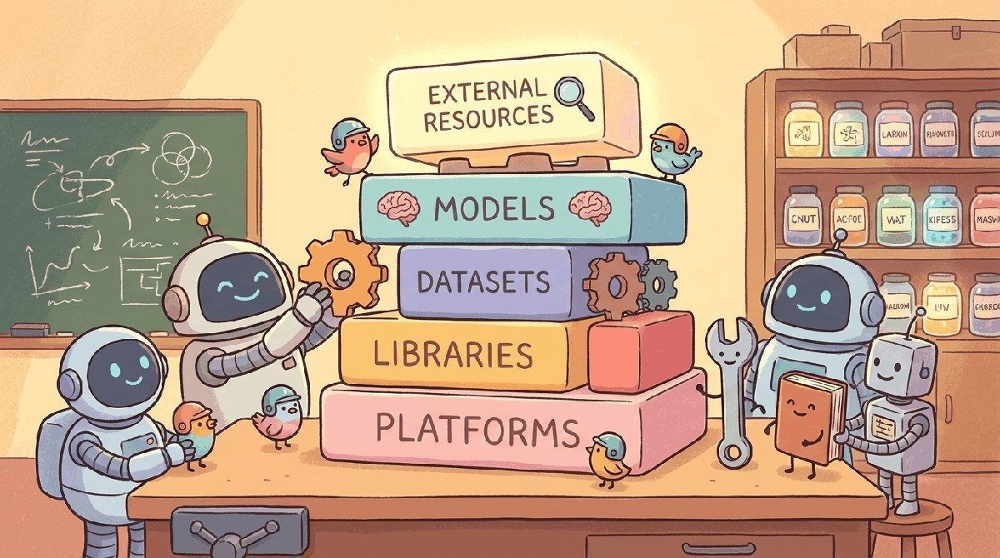

"Pretraining is geology. Fine-tuning is gardening."
Pip, Workflow-Optimizing AI Agent
Chapters 15 through 18 built models. This chapter is the framework grid: TRL, Unsloth, Axolotl, PEFT, DeepSpeed, accelerate, plus the small command-line habits that turn a one-off experiment into a reproducible pipeline.
Part IV moved from "calling models" to "shaping models": SFT, instruction tuning, RLHF/RLAIF, DPO, and the parameter-efficient methods (LoRA, QLoRA). This chapter consolidates the toolbox: transformers as the training engine, TRL for SFT/DPO/RLHF/GRPO, PEFT for adapters, axolotl and lit-gpt as the high-level recipe layers, the instruction datasets (Alpaca, ShareGPT, FineWeb-Edu), and the experiment trackers (Weights & Biases, MLflow) that keep multi-day runs reproducible.
Chapter Overview
Part IV moved you from "call a hosted model" to "adapt a model to your task": continued pretraining, supervised fine-tuning, LoRA and QLoRA, preference optimization (DPO, GRPO), and the reasoning-recipe lineage that DeepSeek-R1 made canonical in 2025. This chapter consolidates the toolchain: Databricks and the managed-cluster platforms, Weights and Biases plus MLflow for tracking, Delta Lake and the Hugging Face datasets / tokenizers libraries for data, the PEFT and TRL stacks for parameter-efficient training, and the Ray ecosystem for distributed work.
These tools are the working substrate for every training run in the rest of the book. The deeper sections (Hugging Face Trainer, MLflow, Ray Train, distributed strategies) double as standalone tutorials you can return to whenever a recipe assumes them.
- Set up an experiment-tracking workflow (W&B or MLflow) bound to git commits and environment hashes.
- Load and tokenize a training corpus with Hugging Face datasets and tokenizers in a streaming pipeline.
- Apply Hugging Face PEFT (LoRA, QLoRA) and TRL (SFT, DPO, GRPO) to fine-tune an open-weight base.
- Compare DDP, FSDP2, DeepSpeed ZeRO, and 3D parallelism strategies for a given model size and hardware budget.
- Configure Ray Train, Ray Serve, and Ray Data for distributed training and serving at production scale.
- Design hyperparameter sweeps with Optuna or Ray Tune and compare runs across trackers.
If you want one stack that covers SFT, LoRA, DPO, and GRPO:
pip install transformers trl peft accelerate bitsandbytesThat set fine-tunes anything up to 70B on a single 80 GB GPU with QLoRA, runs DPO out of the box, and integrates with W&B for tracking. Section 19.4 covers the distributed-training side.
Sections in This Chapter
Prerequisites
- Fine-tuning experience from Chapter 16
- PEFT methods from Chapter 17
- Python project hygiene (envs, requirements, CLI tools)
- 19.1 Platforms Databricks provides a unified analytics platform that combines a collaborative notebook environment, managed Spark clusters, and a governance layer called Unity Catalog.
- 19.2 Libraries & Frameworks Weights & Biases (W&B) is a platform for tracking machine learning experiments, visualizing results, and collaborating with teams.
- 19.3 Datasets & Benchmarks Instruction, pretraining, preference, and reasoning-trace data for Part IV, plus synthetic-data tooling and DVC for data version control.
- 19.4 Data Pipeline Tooling PySpark for distributed text preprocessing, Delta Lake for ACID storage on S3, and feature stores (Feast, Tecton, Databricks FE) for training-serving consistency.
- 19.5 Models Databricks has evolved from a data engineering platform into a full-stack AI platform.
- 19.6 External Reading & Communities Part IV's literature is split between the academic papers introducing each algorithm, the practical blog posts explaining what works, and the open-source communities that ship the recipes.
- 19.7 Hugging Face Datasets and Tokenizers Loading, transforming, streaming, and tokenizing data with the Hugging Face datasets and tokenizers libraries.
- 19.8 Hugging Face Trainer and Accelerate The Trainer API and Accelerate for single-GPU and multi-GPU PyTorch training.
- 19.9 Hugging Face PEFT and TRL Parameter-efficient fine-tuning with PEFT (LoRA, QLoRA, prefix tuning) and preference learning with TRL (SFT, DPO, GRPO).
- 19.10 Linking Experiment Runs to Git Commits Reproducibility patterns that bind every training run to a git commit, env hash, and config.
- 19.11 Weights and Biases Deep Dive End-to-end W&B usage: runs, artifacts, sweeps, reports, model registry, and team workspaces.
- 19.12 MLflow Deep Dive MLflow Tracking, Models, Registry, and Projects: the open-source self-hosted alternative to W&B.
- 19.13 Experiment Comparison and Hyperparameter Optimization Comparing runs across trackers, sweep configurations, and Optuna/Ray Tune integration.
- 19.14 Distributed Training Deep Dive Distributed-training strategies in depth: DDP, FSDP2, DeepSpeed ZeRO, tensor parallel, pipeline parallel, and 3D parallelism.
- 19.15 Ray Train, Ray Serve, and Ray Data The Ray stack for distributed LLM training, scalable preprocessing pipelines, and production model serving.
What Comes Next
Next: Chapter 20: Audio and Music Generation, opening Part V. Parts I through IV stayed inside text: tokens in, tokens out. Part V breaks that frame. We start with audio (TTS, voice cloning, music generation) and proceed through document understanding, vision-language models, 3D scenes, and vision-language-action models that drive robots. By the end you will see why "multimodal" is no longer a separate branch but the new default architecture.